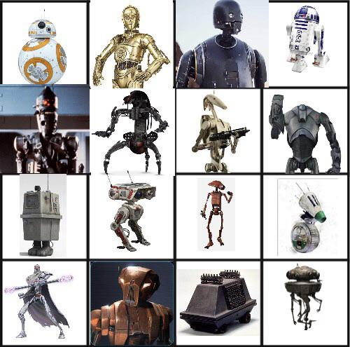

Galeria de Modelos de Droides


Jogar com um herói droide oferece uma experiência de interpretação única. Ao contrário das espécies orgânicas, os droides são construídos com propósitos específicos e possuem características de seres não-vivos, o que lhes confere imunidades especiais, mas também vulnerabilidades a armas de íons.
Ir para o Registro de Droides (Formulário) | Ver sobre Droides na Wookieepedia | Ver Peças e Acessórios (Página 2)

| Tamanho do Chassi | Modificador de Força | Modificador de Destreza |
|---|---|---|
| Pequeno (Small) | -2 | +2 |
| Médio (Medium) | +0 | +0 |
| Grande (Large) | +8 | -2 |
Legenda: Registro holográfico de um droides de combate em ação.